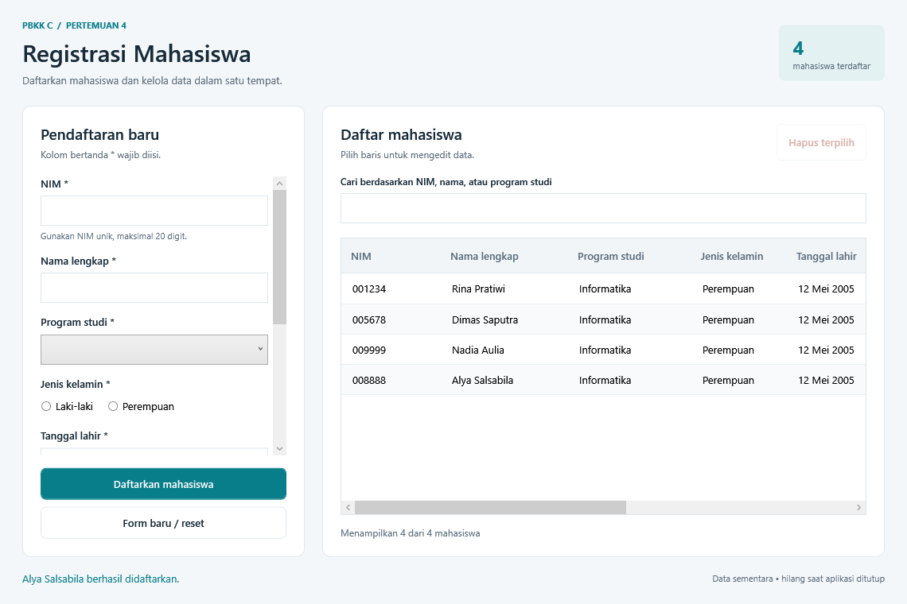

Pertemuan 4 PBKK C: Membuat Aplikasi Registrasi Mahasiswa dengan WPF
Mata kuliah: Pemrograman Berbasis Kerangka Kerja C (2026)
Pertemuan: 4 — Aplikasi Registrasi Mahasiswa
Teknologi: C#, WPF, dan .NET Framework 4.8
Pada pertemuan ini saya membuat aplikasi desktop untuk mencatat registrasi mahasiswa. Pengguna mengisi form, menyimpan data, melihat daftar dalam tabel, mencari mahasiswa, serta memperbarui atau menghapus data. Antarmuka dibangun menggunakan Windows Presentation Foundation (WPF), sedangkan logika aplikasi ditulis dalam C#.

net10.0; project Windows Forms Pertemuan 2 dan 3 memakai net10.0-windows. Ketiganya menggunakan .NET 10, bukan .NET Framework. Untuk tugas ini saya menggunakan .NET Framework 4.8 dengan target net48, sesuai permintaan saat ini. Tugas sebelumnya tetap menggunakan versi aslinya. Penjelasan ini mengikuti cakupan aplikasi yang dibuat; tanggal pertemuan dan rubrik resmi dosen belum diberikan.1. Tujuan pembelajaran
- Membuat aplikasi WPF yang memiliki form dan tabel data.
- Memisahkan deklarasi tampilan dalam XAML dari penanganan event dalam C#.
- Menggunakan kontrol WPF sesuai jenis input pengguna.
- Menghubungkan koleksi data ke
DataGridmelalui data binding. - Menerapkan tambah, baca, ubah, hapus, pencarian, dan validasi data mahasiswa.
2. WPF dan .NET Framework yang digunakan
WPF adalah kerangka kerja antarmuka desktop untuk Windows. XAML digunakan untuk mendeskripsikan kontrol, layout, dan binding secara deklaratif. C# menangani tindakan pengguna serta pengolahan data. Keduanya bekerja bersama dalam sebuah window.
Project ini menggunakan format SDK-style, tetapi target runtime-nya tetap .NET Framework 4.8. Pengaturan inti pada file project adalah:
<TargetFramework>net48</TargetFramework>
<UseWPF>true</UseWPF>Nama .NET SDK dan .NET Framework memiliki peran berbeda. SDK menyediakan alat untuk membangun project; net48 menentukan framework yang dituju oleh aplikasi. Karena itu, format SDK-style tidak berarti aplikasi ini memakai .NET 10.
3. Fitur dan pilihan kontrol
- TextBox: memasukkan NIM, nama, email, nomor telepon, dan alamat.
- ComboBox: memilih program studi dari opsi yang disediakan.
- RadioButton: memilih satu jenis kelamin.
- DatePicker: memilih tanggal lahir.
- Button: menjalankan simpan, hapus, dan reset form.
- DataGrid: menampilkan daftar mahasiswa serta memilih data untuk diedit.
- Kolom pencarian: memfilter mahasiswa berdasarkan NIM, nama, atau program studi tanpa membedakan huruf besar dan huruf kecil.
Daftar mahasiswa kosong ketika aplikasi pertama kali dibuka. Pengguna menambahkan datanya sendiri melalui form.
4. Struktur aplikasi
PBKKC.Pertemuan4.sln
PBKKC.Pertemuan4.csproj
App.xaml
App.xaml.cs
MainWindow.xaml
MainWindow.xaml.cs
Models/Student.cs
Services/StudentRegistration.csApp.xaml dan App.xaml.cs mengatur awal aplikasi. MainWindow.xaml mendefinisikan form, tombol, tabel, dan binding. MainWindow.xaml.cs menangani event pada window. Student.cs memodelkan data satu mahasiswa, sedangkan StudentRegistration.cs memusatkan validasi serta proses membuat atau memperbarui data.
Pemisahan ini membuat aturan registrasi tidak harus ditulis ulang untuk operasi tambah dan edit. Tampilan meminta layanan memeriksa input terlebih dahulu, kemudian memperbarui koleksi jika data valid.
5. XAML dan pemrograman event-driven
XAML menjelaskan apa yang ditampilkan di layar: kontrol input, posisi elemen, label, dan kolom tabel. Layout WPF membantu tampilan mengikuti ukuran window. C# pada code-behind menjelaskan tindakan yang dilakukan aplikasi ketika pengguna berinteraksi.
Alurnya bersifat event-driven. Klik simpan memicu proses membaca dan memvalidasi form. Perubahan baris terpilih memicu pengisian form untuk edit. Perubahan teks pencarian memicu penyegaran filter. Aplikasi menunggu tindakan pengguna, lalu menjalankan handler yang sesuai.
Implementasi ini memakai event pada code-behind untuk mempelajari dasar WPF. Pola MVVM belum menjadi bagian cakupan tugas.
6. Data binding dan koleksi mahasiswa
Data mahasiswa disimpan dalam ObservableCollection<Student>. Koleksi tersebut memberi notifikasi ketika item ditambah atau dihapus. Dengan menghubungkan sumber data tabel ke koleksi, DataGrid dapat menampilkan perubahan daftar.
Setiap kolom tabel menggunakan binding ke properti model mahasiswa. Binding ini menghubungkan nilai objek C# dengan nilai yang tampil di kolom. Ketika data diedit, aplikasi mengganti objek lama dengan objek yang telah diperbarui dalam koleksi. Penggantian item memberi notifikasi kepada WPF sehingga tabel menampilkan hasil edit.
Pencarian menggunakan ICollectionView, yaitu tampilan koleksi yang dapat difilter. Filter memeriksa NIM, nama, dan program studi. Mahasiswa yang tidak cocok tetap berada di koleksi sumber, tetapi tidak terlihat selama filter aktif. Mengosongkan pencarian menampilkan kembali seluruh data.
7. Aturan validasi
- NIM: wajib, hanya angka, maksimal 20 karakter, dan tidak boleh sama dengan NIM mahasiswa lain. NIM disimpan sebagai teks agar nol di depan tidak hilang.
- Nama lengkap: wajib diisi dan maksimal 100 karakter.
- Program studi dan jenis kelamin: wajib dipilih.
- Tanggal lahir: wajib diisi dan tidak boleh berada di masa depan. Jika tanggal yang diketik tidak valid, pilihan tanggal sebelumnya dikosongkan agar tanggal lama tidak tersimpan tanpa sengaja.
- Email: wajib memiliki format alamat email yang valid, maksimal 254 karakter, dan tanpa spasi.
- Nomor telepon: opsional; jika diisi, hanya menerima angka, spasi, tanda hubung, serta tanda
+di awal nomor. Jumlah angka harus 6–15 digit setelah karakter pemisah dan tanda+diabaikan. - Alamat: opsional dan maksimal 500 karakter.
Semua pemeriksaan dilakukan sebelum data ditambahkan atau diperbarui. Jika satu aturan gagal, aplikasi menampilkan pesan agar pengguna dapat memperbaiki input. NIM menjadi identitas tetap dan tidak dapat diubah ketika edit. Pemeriksaan NIM duplikat mengecualikan mahasiswa yang sedang diedit, sehingga menyimpan kembali NIM miliknya sendiri diperbolehkan.
Validasi email memeriksa format saja. Aplikasi belum mengirim pesan atau memverifikasi bahwa alamat email tersebut aktif.
8. Alur registrasi, edit, hapus, dan pencarian
- Registrasi: pengguna mengisi form lalu menekan simpan. Data yang valid dimasukkan ke koleksi dan ditampilkan pada tabel.
- Edit: pengguna memilih baris tabel. Data mahasiswa dimuat ke form; setelah diubah dan disimpan, baris mahasiswa yang sama diperbarui. NIM tetap saat edit.
- Hapus: pengguna memilih mahasiswa lalu menekan hapus. Dialog konfirmasi ditampilkan; data dihapus hanya jika pengguna menyetujuinya.
- Reset: form dikosongkan dan kembali ke mode tambah, sehingga penyimpanan berikutnya membuat mahasiswa baru.
- Cari: pengguna memasukkan sebagian NIM, nama, atau program studi. Tabel menampilkan hasil yang sesuai; pencarian kosong mengembalikan daftar lengkap.
9. Cara membangun dan menjalankan
Aplikasi dijalankan di Windows dengan runtime .NET Framework 4.8. Untuk pengembangan, gunakan Visual Studio dengan workload .NET desktop development dan dukungan project SDK-style. Project menyertakan package build-time Microsoft.NETFramework.ReferenceAssemblies versi 1.0.3 untuk menyediakan referensi framework melalui restore, sesuai dokumentasi reference assemblies Microsoft. .NET Framework 4.8 targeting pack/developer pack juga dapat dipasang bila diperlukan oleh lingkungan Visual Studio.
- Buka file
PBKKC.Pertemuan4.slndi Visual Studio. - Pilih
PBKKC.Pertemuan4sebagai startup project bila diperlukan. - Jalankan Build Solution.
- Tekan F5 atau Ctrl+F5 untuk menjalankan aplikasi.
Jika .NET SDK yang sesuai tersedia, build juga dapat dilakukan dari terminal pada folder project. Restore memerlukan akses NuGet atau cache package yang telah tersedia. Package referensi memungkinkan build tanpa targeting pack lokal yang dipasang secara terpisah:
dotnet build PBKKC.Pertemuan4.slnHasil build dapat dijalankan melalui Visual Studio atau executable di folder bin/Debug/net48/.
10. Skenario pengujian manual
Hasil verifikasi: Build Release berhasil tanpa warning atau error. Assembly hasil build menargetkan .NET Framework 4.8. Sebanyak 56 pemeriksaan programatis pada validasi, registrasi, edit, pencarian, koreksi tanggal, notifikasi koleksi, sesi kosong, dan layout WPF lulus. Tombol simpan tetap terlihat pada ukuran normal maupun minimum. Dialog konfirmasi hapus tercakup dalam prosedur manual berikut.
Daftar berikut dapat dipakai untuk memeriksa perilaku aplikasi. Ini merupakan prosedur pengujian, bukan laporan bahwa seluruh pengujian sudah lulus.
- Buka aplikasi dan pastikan tabel awal kosong.
- Daftarkan mahasiswa dengan NIM
001234dan seluruh kolom wajib yang valid. Pastikan satu baris tampil dan nol di depan NIM tetap tersimpan. - Coba form kosong, NIM berhuruf, dan NIM duplikat. Pastikan masing-masing ditolak tanpa menambah data. Periksa bahwa kotak NIM membatasi input hingga 20 karakter, termasuk saat menempel teks yang lebih panjang; layanan validasi juga menolak NIM yang melewati batas tersebut.
- Coba email tidak valid serta tanggal lahir di masa depan. Pilih tanggal valid lalu ketik tanggal yang tidak valid; pastikan pilihan lama dikosongkan dan data tidak disimpan sampai tanggal valid diisi.
- Masukkan telepon berhuruf, tanda
+di tengah, atau nomor kurang dari 6 maupun lebih dari 15 digit. Pastikan semua ditolak. Nomor 6–15 digit dengan tanda+opsional di awal, spasi, atau tanda hubung harus diterima. - Pilih mahasiswa, edit nama atau email, lalu simpan. Pastikan data pada baris yang sama berubah dan jumlah mahasiswa tetap.
- Pilih mahasiswa untuk diedit dan pastikan NIM tidak dapat diubah. Simpan perubahan data lain dengan NIM yang sama dan pastikan penyimpanan diperbolehkan.
- Cari sebagian NIM, nama, dan program studi dengan variasi huruf besar/kecil. Kosongkan pencarian untuk mengembalikan semua baris.
- Batalkan konfirmasi hapus, lalu ulangi dan konfirmasi. Pastikan data hanya dihapus pada percobaan kedua.
- Reset form setelah memilih baris, lalu simpan data baru. Pastikan aplikasi kembali melakukan operasi tambah.
- Tutup dan buka kembali aplikasi. Daftar kembali kosong karena data hanya tersimpan selama sesi berjalan.
- Coba nama lebih dari 100 karakter serta alamat lebih dari 500 karakter. Pastikan batas input atau validasi mencegah penyimpanan nilai yang terlalu panjang.
11. Batasan dan hasil pembelajaran
Registrasi pada aplikasi ini berarti pencatatan data mahasiswa di memori. Belum ada database, penyimpanan file, autentikasi, pengiriman email, atau hubungan dengan sistem akademik. Data hilang ketika aplikasi ditutup. Penyimpanan permanen dapat menjadi pengembangan berikutnya jika dibutuhkan dalam instruksi tugas.
Melalui tugas ini, saya menerapkan XAML, event-driven programming, kontrol input WPF, data binding, koleksi yang dapat memberi notifikasi, filter data, serta validasi sebelum perubahan disimpan. Pemisahan model, layanan registrasi, dan tampilan membuat masing-masing bagian lebih mudah dipahami dan dikembangkan.